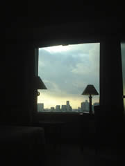
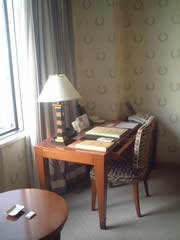
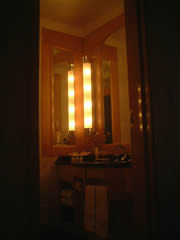
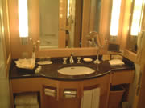
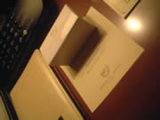
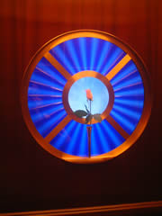
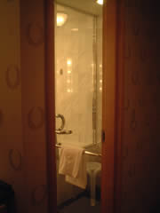

大阪出張で帝国ホテル大阪に宿泊しました。
ところで皆様、大阪には帝国ホテルが2つあるのをご存知でしょーか。
一つが本家「帝国ホテル大阪」
。もひとつは「大阪帝国ホテル」
。後者はビジネスホテルです。
今回泊まったのは「本家」のほーです。
しかもどーゆーわけかエグゼクティブフロアに宿泊。エグゼクティブフロアに行くにはエレベーターにカードキーを入れないと入れません。むむむ。
ところで帝国ホテルはなんか良いニオイがします。百合と梔子が合わさったような華やかで甘い香り。
この香りの出迎えがなんともラグジュアリービバ帝国！って感じです。
なんとも大げさですが。
ベッドメイク後は枕元にトリュフチョコレート。ウワサに違わずチリ一つ無し。バスルームも完璧な磨きっぷり。